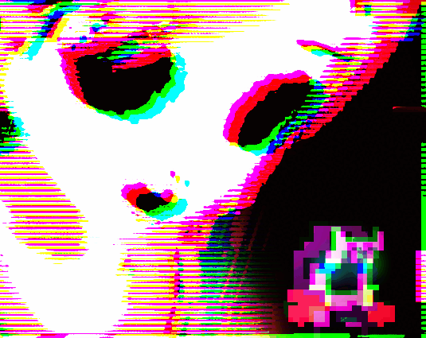

DERE EVIL EXE
DERE EVIL EXE
Detalhes
|  | |
| Tempo de jogo | Não Jogado |
| Última Atividade | Nunca |
| Adicionado | 04/04/2025 0:19:55 |
| Modificado | 04/04/2025 0:21:57 |
| Status de Conclusão | Not Played |
| Biblioteca | Itch.io |
| Fonte | itch.io |
| Plataforma | PC (Windows) |
| Data de Lançamento | 04/04/2018 |
| Pontuação da Comunidade | 70 |
| Avaliação da crítica | |
| Pontuação do Usuário | |
| Gênero | Adventure Indie Platform Simulator |
| Desenvolvedor | Darius Immanuel D. Guerrero |
| Editor | AppSir |
| Funções | Single Player |
| Links | Official iPhone Steam Android Itch Twitch |
| Tag | [GGDeals] Synced |
Descrição
DERE EVIL EXE is both a terrifying thriller with a gripping story and an unorthodox retro platformer with unique puzzles and obstacles.
In DERE EVIL EXE, you step into the tiny shoes of a silent hero named 'Knightly'. Knightly must jump, run, and manipulate environments in order to survive the heart-racing journey through a stunning pixel art world.
Within surreal structures and blocky hills lurk resident creatures known as 'corruptions'. They take the form of their creator's greatest fears. Their creepy creator, sporting a cunning visage of cheerfulness, hides in plain sight as she watches her prey fall deeper into her traps.
=====
A GAME LOST IN TIME
Modern 2d side-scrolling horror game with levels inspired by the simplicity and aesthetics of 16-bit arcade classics of the 80s and 90s.
MELODIC MADNESS
The game plays either catchy retro chiptune music or ominous PSX era orchestral music, depending on the situation.
IMMERSIVE TALE OF HORROR
A completely new meta story that bends the creepypasta genre in ways unseen in the video game world.
STANDALONE SEQUEL
You don't need to have played the award-winning DERE EXE and The Last Yandere to enjoy DERE EVIL EXE.
---
If you liked it and are intrigued by the concept, please consider donating so we can make more games like this one. Thank you so much.
If you want to learn more about our universe of horror games, join our Discord server! Here's an invite link for you: AppSir Games Discord